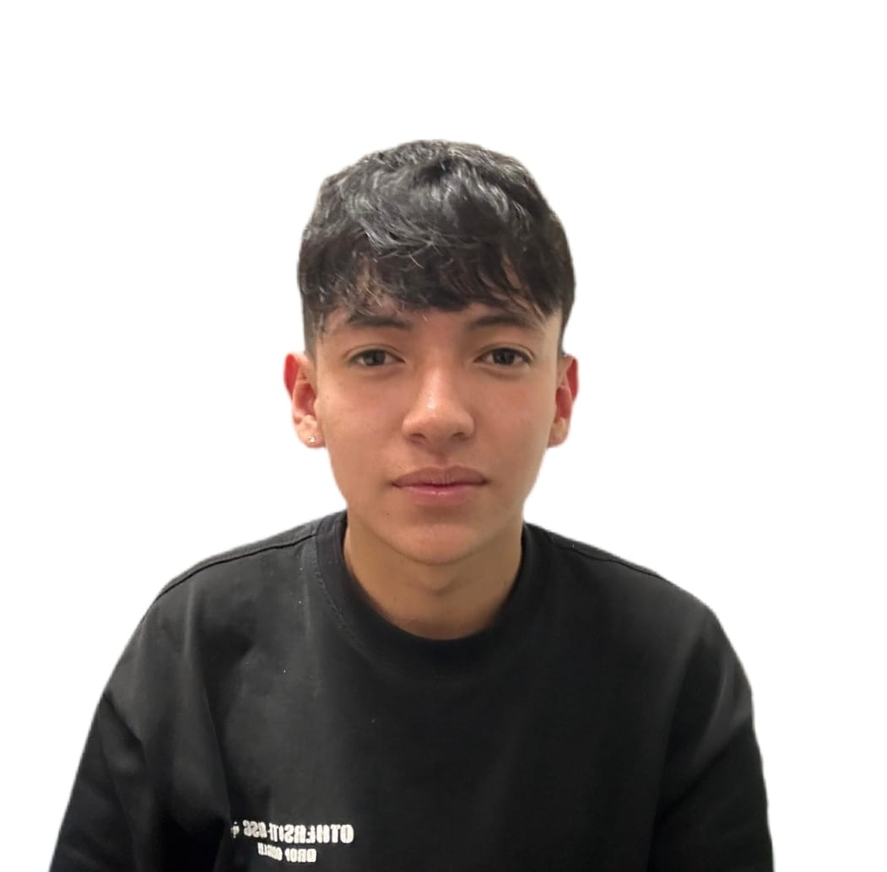

Quién soy
Presentación

Soy estudiante de Análisis y Desarrollo de Software, apasionado por el mundo de la tecnología y la programación. Me caracterizo por ser una persona curiosa, responsable y comprometida con cada proyecto que emprendo. Disfruto aprender cosas nuevas, enfrentar retos y encontrar soluciones creativas a los problemas.
Me interesa especialmente el desarrollo web, la creación de interfaces intuitivas y la programación de aplicaciones que faciliten la vida de las personas. En mi tiempo libre me gusta explorar nuevas herramientas, practicar código y mantenerme actualizado sobre las últimas tendencias tecnológicas.
Mi objetivo es seguir formándome como profesional, adquirir experiencia en el sector y contribuir con mi conocimiento al desarrollo de proyectos innovadores.